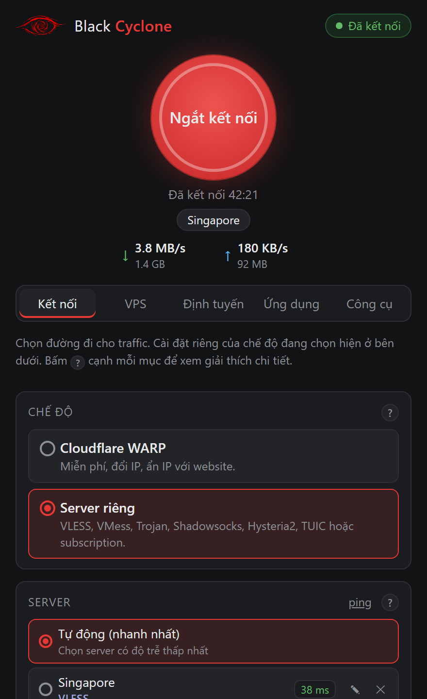
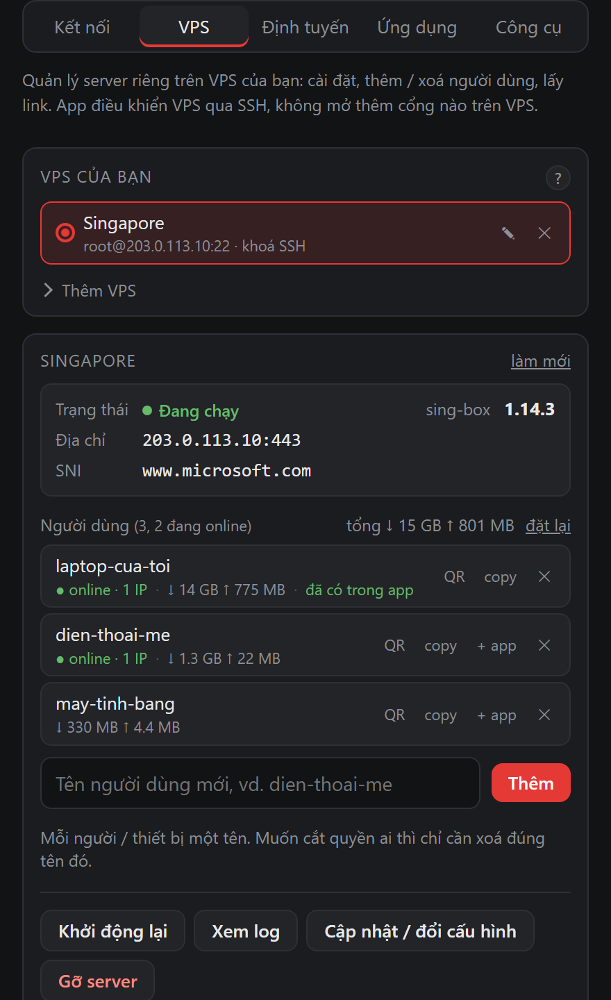
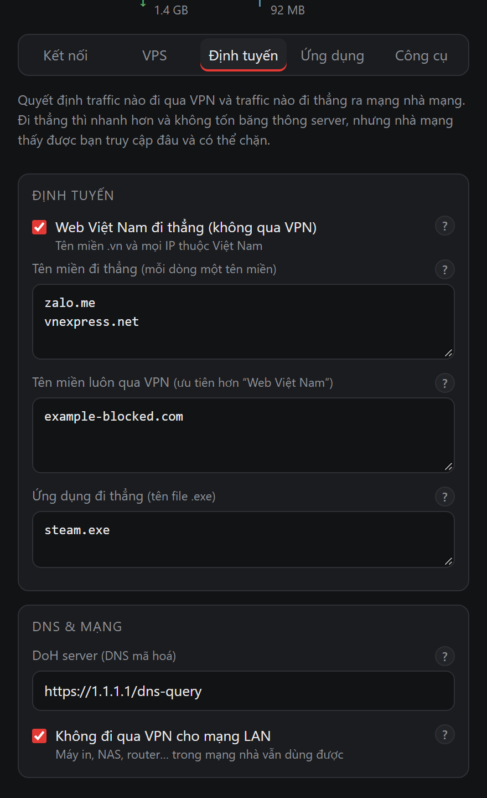
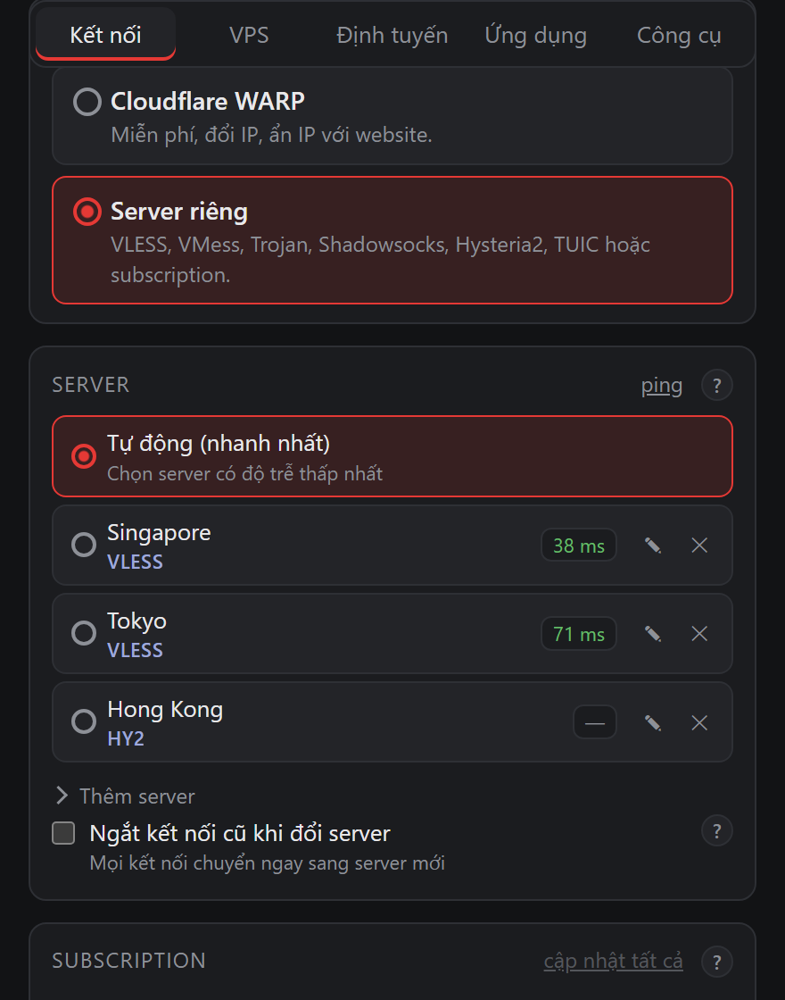

Server là của bạn
Thuê VPS ở nhà cung cấp bạn chọn rồi cài server ngay trong app. Khoá Reality được tạo ngay trên VPS và chỉ root đọc được.
Mã nguồn mở · MIT / GPL-3.0
Black Cyclone biến một VPS giá rẻ thành server riêng ngay trong app, chỉ vài cú bấm. Không có công ty VPN nào ở giữa, không có ai khác giữ log. Bạn giữ khoá và nắm toàn quyền.



Tự chủ thông tin
Dịch vụ VPN thông thường bắt bạn tin rằng họ không ghi log. Black Cyclone thì để bạn tự giữ hạ tầng, nên không còn bên thứ ba nào phải tin nữa.
Thuê VPS ở nhà cung cấp bạn chọn rồi cài server ngay trong app. Khoá Reality được tạo ngay trên VPS và chỉ root đọc được.
App kết nối thẳng từ thiết bị tới VPS của bạn. Không có tài khoản, không có telemetry, không có server của dự án nằm giữa.
Ai cũng đọc được toàn bộ app, script cài server và cấu hình sing-box. Binary tải về đều được kiểm SHA-256.
Nếu lõi kết nối dừng, kill switch chặn mọi traffic để IP thật không bị lộ. Cài đặt trên máy được mã hoá.
Cách hoạt động
Gói rẻ nhất là đủ (1 vCPU, 512 MB RAM), chạy Ubuntu hoặc Debian. Nên chọn Singapore, Nhật hoặc Hồng Kông để ping thấp.
Trong tab VPS, nhập IP và mật khẩu VPS rồi bấm Cài server. App cài sing-box với VLESS + Reality, bật BBR, mở tường lửa và tạo link. Thích dòng lệnh thì chạy:
$ server/deploy.sh root@203.0.113.10Mở Black Cyclone, chọn Server riêng, dán link vào. Nhà mạng chỉ thấy một kết nối HTTPS bình thường.

Quản lý server
Không phải SSH vào VPS hay nhớ lệnh. App tự đăng nhập SSH để làm mọi việc và không mở thêm cổng nào trên VPS.
Minh bạch
Chúng tôi muốn bạn hiểu rõ công cụ mình đang dùng. Server tự dựng cho bạn quyền kiểm soát, nhưng không làm bạn vô hình.
Nếu cần ẩn danh thật sự, hãy dùng Tor.
Chia sẻ server với gia đình bằng lệnh bcserver add sẽ có thêm người dùng chung một IP,
nhưng mục tiêu của Black Cyclone vẫn là tự chủ, không phải ẩn danh.
Dùng VPS của bạn, hoặc bất kỳ link vless vmess trojan ss hysteria2 tuic, kể cả subscription URL. Có thể tự động chọn server nhanh nhất và đổi server mà không cần ngắt kết nối.
Đăng ký WARP miễn phí ngay trong app và tự quét endpoint nhanh nhất. Tiện khi chưa có VPS, nhưng lúc này traffic đi qua Cloudflare.

Miễn phí và mã nguồn mở. Bản cài đặt nằm ở trang Releases trên GitHub.